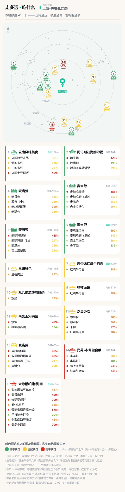
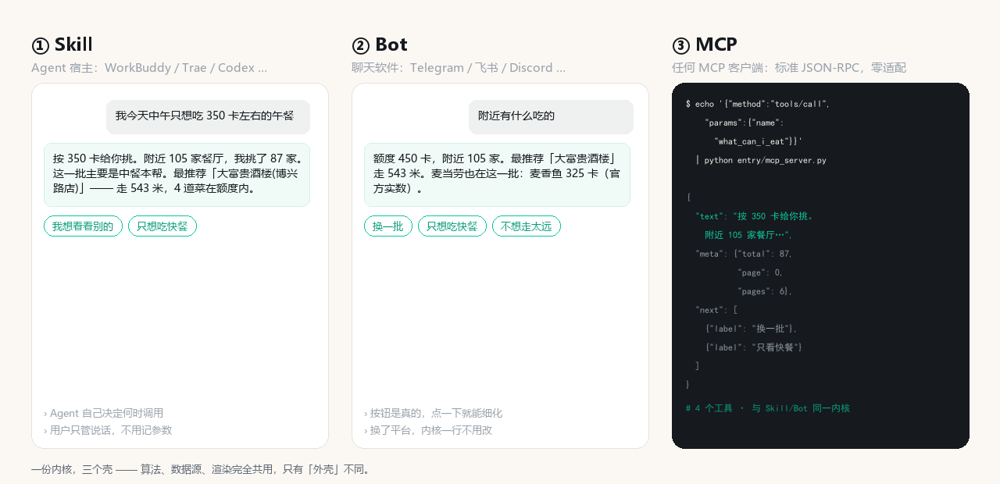

站在楼下纠结「现在吃什么」时，你真正想知道的是——这一顿，我吃得下吗？
离线可交互 · 零依赖 · 纯前端

一张竖屏长图：附近哪家店、哪道菜你这顿吃不吃得下——绿色 = 吃得起，红色 = 超了。
我们把 158 条麦当劳官方营养数据、155 万条中餐菜谱摊在一起算了一遍。
同一街区里，麦当劳的推荐菜大多落在普通人的一餐额度之内。
这不是我们编的，是算出来的。
对热量预算紧张的人来说，走进麦当劳，反而是最安全的选择。
| 你问 | 它做 |
|---|---|
| 我现在还能吃 450 卡，附近有什么能吃的 | 算额度、列附近店、每道菜标「吃得下 / 超了」 |
| 走过去 500 米能多吃多少 | 走 500 米 ≈ 多挣 28 卡，额度实时重算 |
| 麦当劳和隔壁面馆哪个更合适 | 同一额度下对比热量，一眼看出差距 |
| 这家店整体会不会吃超 | 按推荐菜相对额度给店铺定性 🟢 🟡 🔴 |
输出一张竖屏长图，可以直接发微信、发小红书。
同类赛道里，大多数项目只算了菜品的热量；提到「步行」的，几乎没几个把它接到热量上。
| 别人通常做的 | 我们做的 |
|---|---|
| 算一下麦当劳某一款汉堡的热量 | 你楼下的任意一家店，例如麦当劳 |
| 把距离当成「还有多远」 | 把距离换成「这顿能多吃多少卡」 |
| 只做一个平台 | 三种形式，共用同一份内核 |

麦当劳 MCP 开放的，是它自己的营养表。可真实场景里，你 400 米外那家面馆多少卡？
没有人做这件事。我们做了。
| 能力 | 供什么 | 来源 |
|---|---|---|
| 麦当劳 | 门店 + 推荐菜 + 官方精确营养值（158 条，含蛋白 / 脂肪 / 碳水 / 钠 / 钙） | 麦当劳官方 MCP |
| 高德地图 | 周边任意餐厅 + 网友推荐菜 + 真实路网步行距离 | 高德开放平台 |
MCD_MCP_TOKEN —— 门店与营养值都实时从 mcp.mcd.cn 拉WALKKCAL_PACKS=mcd 只看麦当劳 ·
WALKKCAL_PACKS=nearby 只看周边餐厅
也能接你自己的 —— 点评的企业接口、美团，或者你手上任何一份门店／菜品数据。 数据源是可插拔的：加一个文件 + 一个环境变量，主流程 0 行改动。
先跑内置场景 —— 这一步一个 Key 都不需要。
git clone https://github.com/adexbn/walk-kcal && cd walk-kcal python walkkcal/render.py # 出图（内置场景，1~2 秒） open demo/explore.html # 离线可交互 demo
快照里已经存好了门店、推荐菜、步行距离和热量 —— 麦当劳那 158 条官方营养值也是内嵌的。
Key 只在两件事上需要：抓你自己楼下的点位（高德地图的 AMAP_KEY）、
让麦当劳走实时而非内置快照（MCD_MCP_TOKEN + WALKKCAL_MCD_LIVE=1）。
输出格式是可选的：默认出 SVG —— 浏览器打开就能看、放大不糊，大多数场景够用； 想要 PNG（例如直接发微信、小红书），装一个很小的扩展包即可。
额度是你自己定的预算，不是算法塞给你的建议 —— 走路只让它随距离增长。
中餐热量是估算的（平均误差 25–28%），因为语料库里 0% 的菜谱标注了份量。 我们花最大力气的地方不是「算得更准」，而是知道什么时候算不准，然后如实显示「算不出」—— 而不是猜一个看起来正常的数字。
宁可少算，不可算错。